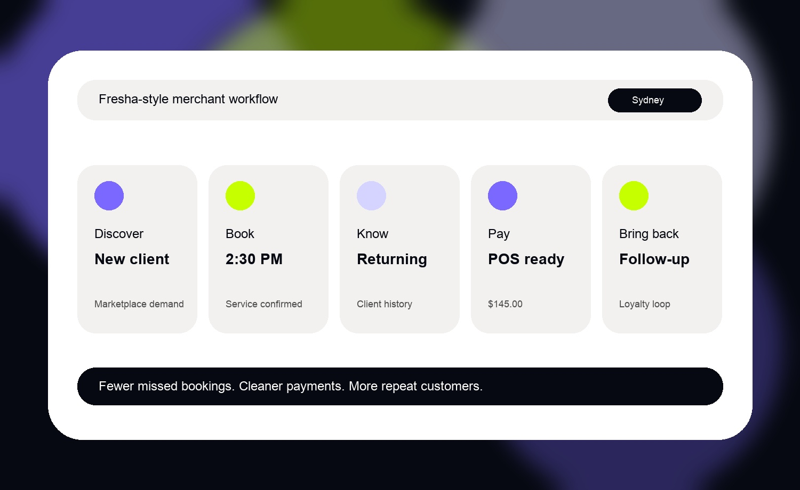
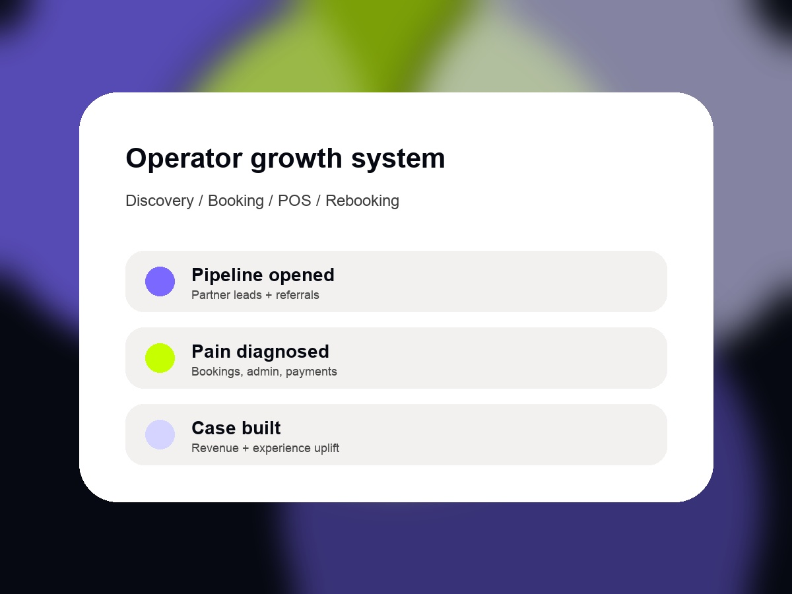

Outbound and pipeline creation
Use partner sourced leads, LinkedIn outreach and targeted customer referrals to open commercial conversations at Fresha.
Business Development Executive, Sydney
I know how to speak with real-world operators about the commercial friction sitting inside bookings, payments, customer experience and repeat revenue. That is why Fresha is the right next move.

Why Fresha
I am making a deliberate move into a hands-on commercial role to be closer to the conversations that generate revenue. Fresha is exciting because it sits close to real-world operators: salons, clinics, wellness businesses and provides solutions for the daily friction that slows them down.
My strongest bridge is my experience at Tyro Payments. The best merchant conversations were never just about rates or terminals. They were about missed revenue, online conversion, cashflow, operational drag, customer experience and whether the payment layer helped that business to grow.
Role fit
Use partner sourced leads, LinkedIn outreach and targeted customer referrals to open commercial conversations at Fresha.
My history of working with retail, hospitality and eCommerce merchants where the commercial problem sat inside payments, workflow, customer experience and growth allows instant trust and credibility to be built with the merchant.
Managed strategic merchant relationships through transaction-data led selling and an eCommerce payment rollout in response to the COVID-19 outbreak.
Led TalkLife CS team through all renewals, revenue retention, QBR cadence, customer health scoring and expansion and CRM automations and hygiene, giving me a clear view of the opportunities within our portfolio.
Relevant experience
Managed strategic merchant relationships across Tyro’s Top 100 merchants in retail, hospitality and eCommerce, accountable for $1.2bn transaction volume and $20m revenue across 20 major accounts.
Led CS operations across £1.33m ARR and 127 accounts, including enterprise customers, with responsibility for renewals, QBRs, customer health, reporting and expansion opportunities.
Owned global account relationships with municipalities and operators, translating customer needs into product and technical priorities while improving onboarding and growth motions.
Helped build the enterprise sales motion for a public-sector procurement analytics and AI platform, establishing process and SOPs for major accounts.
Developed and maintained relationships with independent, part-time and full-time traders and investors, using education, reports and partner channels to grow revenue opportunities.

Sales motion
I would start with the operator’s reality: how they get discovered, take bookings, manage clients, take payments and bring people back. Then I’d show where Fresha removes friction and turns daily workflow into growth.
Operating style
Use transaction data, customer behaviour and workflow pain to create a useful commercial conversation.
Business owners do not need theatre. They need a clear link between the problem, the product and the outcome.
Listen like an operator, speak plainly and make the next step feel obvious.
My CS background means I care whether the sale becomes adoption, retention and revenue.
Let’s talk
Business Development Executive candidate, Sydney